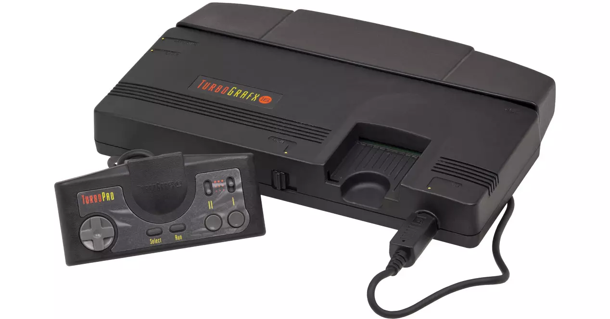

TurboGrafx-16
También conocida como consolas de 16 bits, llega el momento de la explosión en todo el mundo con un salto cualitativo en la calidad de los juegos gracias a incorporaciones tecnológicas de primer nivel. No solo aumentan la capacidad y velocidad de los procesadores de las máquinas, sino también su paleta de colores y la perfección de su apartado de audio. Prácticamente de forma general, se mantiene el cartucho como formato para publicar los juegos y la nueva remesa de consolas se estrena en 1987 con uno de los modelos más recordados: la Turbografx 16 de NEC.